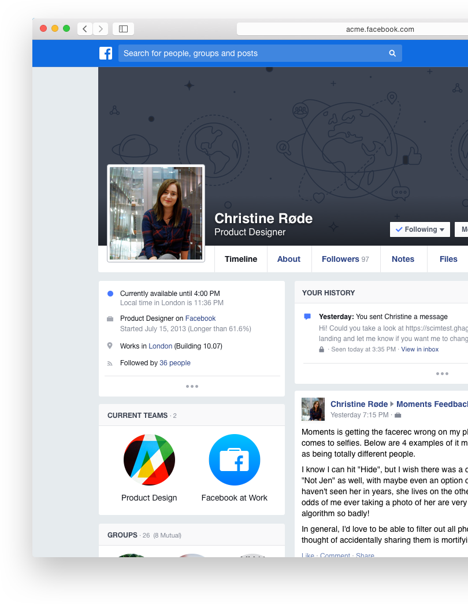
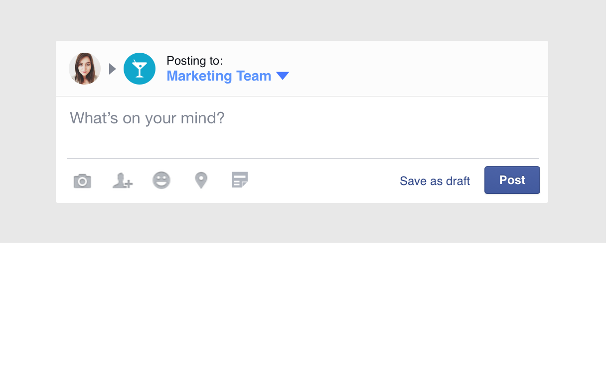
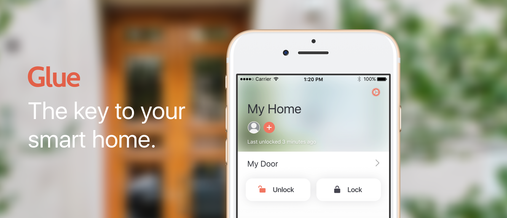

Strategy, Research, UI/UX, Visual Design, Prototyping
(let's just call it full stack)
I have 4 years professional experience doing digital product design. In that time, I've been involved in every part of the process — defining product goals and strategy, solving user and business problems, building comprehensive design systems, growing teams, working with engineers, building interactive prototypes, extensive user testing, and even pushing code. I believe the best products involve design from the very beginning, and strive to build experiences that are are as enjoyable as they are valuable.
Facebook Workplace
2014–2016
In 2014, I moved to London to lead design work for “Facebook at Work”, a team then in its infancy that would later become Facebook Workplace. Over two years, I tackled the challenge of building a product to build stronger communities within large companies.

Starting out as essentially a repackaged, sandboxed version of Facebook itself, the project was massive in scope and spanned every platform. Early work revolved primarily around which features to remove, determining which parts of Facebook were not appropriate or useful in a work-context, before designing new features to augment the workplace experience.

We learned quickly that people had to be taught how to use the product for work communication. Confronted with an undirected composer, people just responded by using Workplace the same they used Facebook. Through design, we shifted the focus from News Feed into Groups, being careful to emphasize the different uses of and separation between Facebook Workplace and "regular" Facebook, while still keeping the experiences similar enough to retain familiarity.
Over 2 years on the team, I led design efforts on iOS, Android and web, established a unique and distinct brand identity for Facebook Workplace, hired and art directed third-party firms for both marketing and in-product illustrations, and helped interviewing to scale the team as we tripled in headcount.
Two years is a long time. For a more thorough walkthrough of my contributions, let's chat in person.
Glue Smart Lock
2017
Glue is an European startup building a delivery platform around the smart lock. I was brought on to improve the user experience of their existing consumer app, as well as design the initial concept for a new delivery app for couriers.

The previous iteration of the app suffered from high drop-off rates during the set up process, as well as low retention rates. In addition, the visual design of the app was not aligned with their otherwise light and Scandinavian brand.
I redesigned all the main touch points of the app, building a new system of reusable design components to match both brand and industry standards. I worked to lower the major friction points, reducing the number of steps to unlock/lock your door, and creating new ways to manage your lock outside of the app. I also identified the major touchstones in the user journey, building a communication strategy to further encourage usage and invitations.
With the new and improved onboarding flow, completion rates rose over 200%, and the amount of manual work required from customer service reduced drastically.
Strategic changes to the home screen emphasized the ability to invite guests and residents, increasing # of invitations sent significantly.
My work for Glue also includes several yet-unlaunched products. Stay tuned!